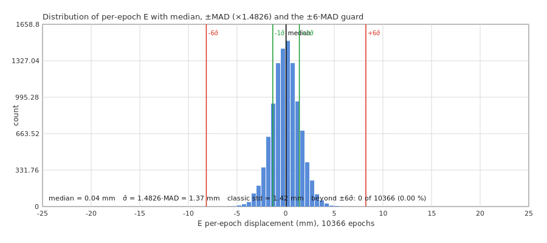
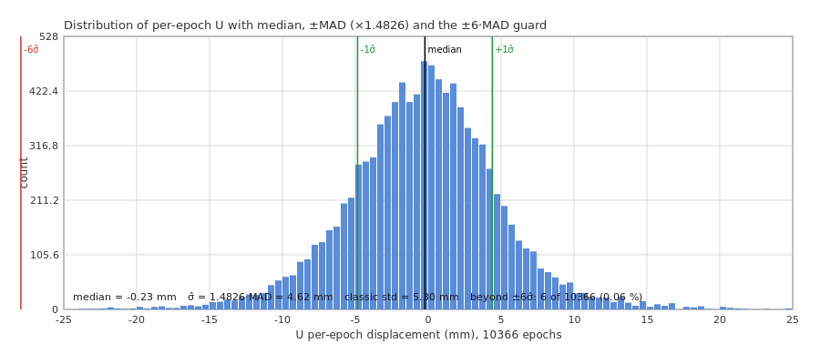

Panagiotis Elias · GaiaSeis / NtripClient.jl · 2026-09-09
Update 2026-10-20 (GaiaSeis 0.4.1-dev). The bridge guard described below no longer blanks epochs. Because a genuine strong-motion pulse is indistinguishable from a spike by amplitude (at 6 × MAD, about 6 cm/s horizontal at 10 Hz, the old guard would have blanked the onset of an earthquake, and its self-reset latch produced the 19–22-epoch blank runs), the MAD test is now flag only (defaults 8 × MAD over 200 epochs) and epochs are blanked only by a quality gate: fewer than 8 satellites or 2 constellations, PDOP above 5, post-fit residual RMS above 0.1 m, or a step above 5 m/s × the epoch interval. Per-satellite residual flags are reported alongside. See MANUAL §5.7 and §5.23. The text below describes the 0.3/0.4.0 behaviour.
In the UPA10Z session of 2026-09-09, after the a-priori position was corrected, 2–3 % of all epochs were still logged as NaN (blanked) by the bridge's outlier guard, 207 of ~9 000 epochs in the first 17 minutes, and only 1 of the first 23 blanked epochs followed a stream gap. So these rejections are not the gap-scaled bias that was fixed earlier; they come from the guard's statistics. The consequences are mild but real: a 0.1-s hole in the displacement series, a missing sample in the miniSEED channels (now handled as a proper time tear, see the operator guide), and an optimistic noise figure because the tails are cut off.
For a sample x₁…xn the median absolute deviation is
MAD = median( |xi − median(x)| )
It is a robust measure of scale: up to 50 % of the sample can be arbitrarily wrong before the MAD is affected (breakdown point 0.5), whereas a single wild value dominates the classical standard deviation. For normally distributed data the MAD is not equal to σ; the expectation is MAD = Φ⁻¹(0.75)·σ = 0.6745·σ, hence the consistency factor
σ̂ = 1.4826 · MAD
which is what both PPPHVA (_isoutlier) and the GaiaSeis bridge (_outlier_guard!) use ("MATLAB scaling"). A test "|x − median| > k·σ̂" is therefore a k-sigma test that cannot be pulled open by the very outliers it is meant to catch.


Figure 1, distribution of the accepted per-epoch E and U displacements of the session, with the median, ±σ̂ = ±1.4826·MAD and the ±6σ̂ guard limits. Because the guard evaluates the MAD over the last 20 epochs (not the whole session), and because the rejected epochs are absent from these histograms, the session-wide count beyond ±6σ̂ is smaller than the guard's own rejection count.
PPPHVA _isoutlier (sfvlsq.jl) | bridge _outlier_guard! (bridge.jl) | |
|---|---|---|
| what is tested | the vector of per-satellite pre-fit residuals v = z − c of one epoch | the estimated dXYZ of the current epoch against the last outlier_window accepted epochs, per component |
| threshold | 3·σ̂ (fixed) | outlier_mad_threshold × σ̂ (profile; 6 for UPA10Z) |
| sample size | number of satellites (5–10) | outlier_window epochs (20 for UPA10Z = 2 s at 10 Hz) |
| action | drop the satellite from this epoch's LSQ (only during the first 3 epochs or when std(v) > 2.5·running σ) | blank the epoch (NaN in log, CSV and miniSEED), do not add it to the window; after outlier_window consecutive rejections wipe the window and re-seed (assumes real motion) |
| floor | none (MAD = 0 → no rejection) | σ̂ ≥ 0.1 mm per component |
Three effects add up:
In other words, the "minor item" is mostly the guard correctly rejecting heavy-tail epochs of a weak GPS-only geometry, made noisier than necessary by a very short window.
outlier_window = 200 (20 s at 10 Hz, the value the NOA10Z recipe in MANUAL §10.2 already uses). The σ̂ estimate then has a 8 % standard error instead of 26 %, the limit becomes stable, and short bursts of bad epochs cannot inflate the baseline. Keep outlier_mad_threshold = 6.outliers_rejected counter in /status.json (added in 0.3) against the epoch count; 0.1–0.5 % is the expected regime for a healthy multi-GNSS geometry.outlier_mad_threshold = 0) for seismological consumers: one 30-mm bad epoch in a 10 Hz miniSEED channel looks exactly like a P-wave onset.